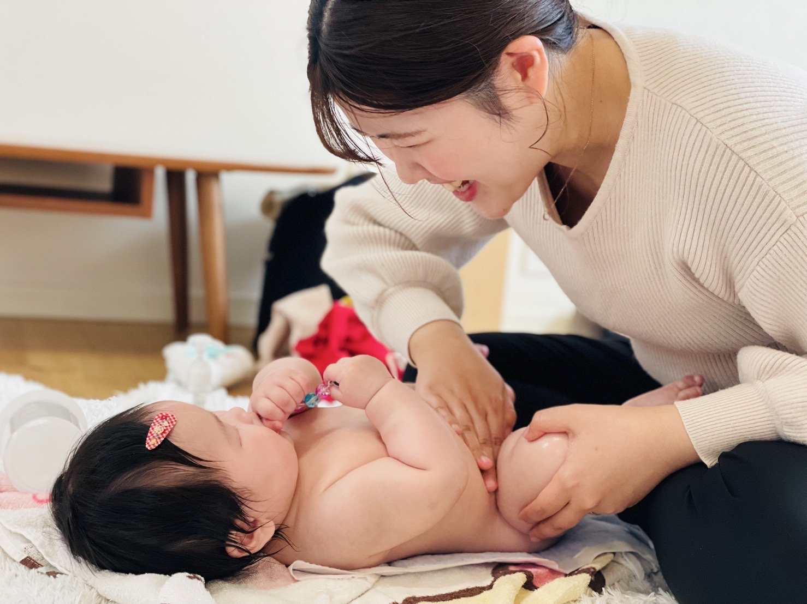
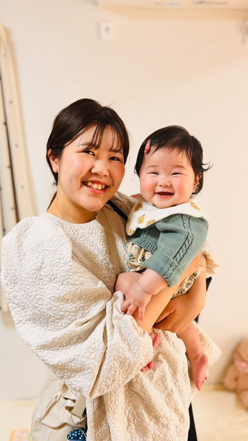
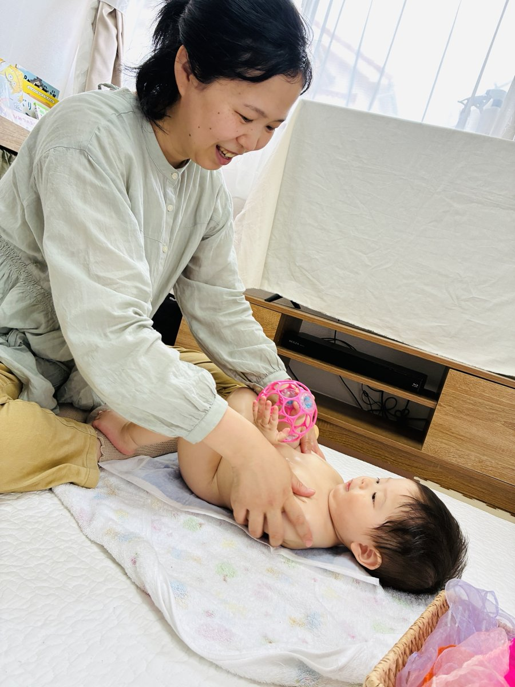
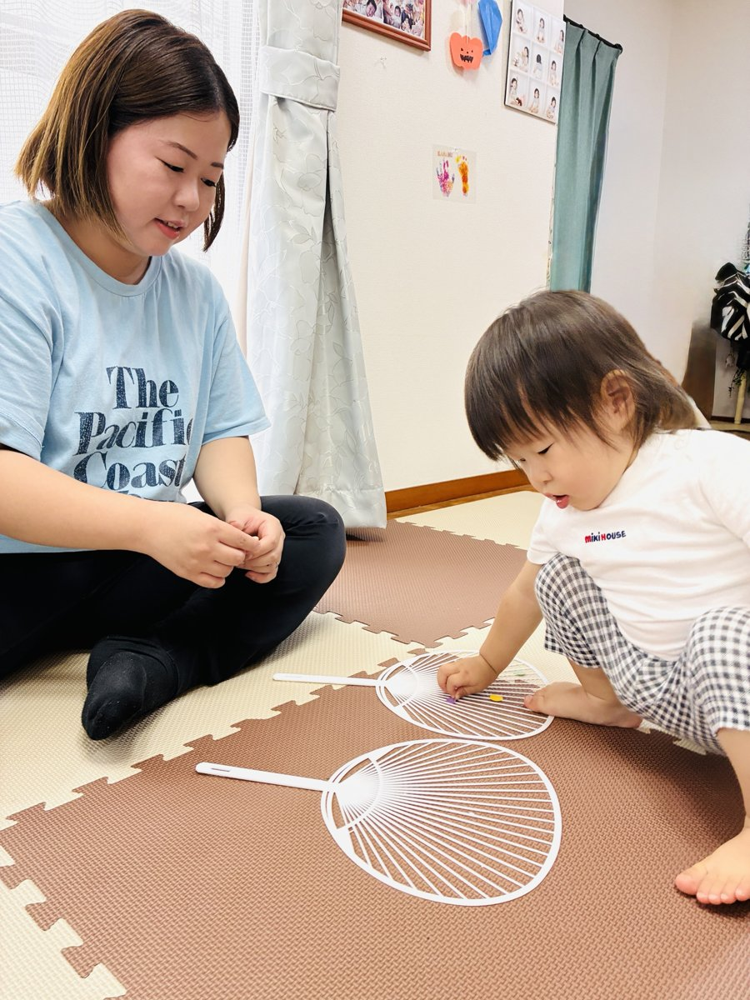

高砂市のベビーマッサージ＆リズム体操
親子である前に、ひとりの人間同士。
それぞれの気持ちと育ちを大切にする親子教室。


ABOUT
兵庫県高砂市で女の子を一人育てながら、現役保育士、そしてベビーマッサージインストラクター、リズム体操講師としてお仕事をしています久次沙季です。
妊娠後期に高砂市へ引っ越し、友達も知り合いもいないまま出産を迎えました。社会から取り残されたような孤独を感じていたとき、出会ったのがベビーマッサージでした。
それまでは「ママになったら自分を犠牲にしていくもの」と思っていました。でも、赤ちゃんとふれあい、ママ同士で笑い合う時間の中で、「ママ自身も楽しんでいいんだ」と気持ちが変わっていきました。
あのときの私のように、ひとりで頑張っているママの居場所をつくりたい。そんな思いでお教室や親子イベントを開催しています。
CLASS
レッスンは1組ずつのマンツーマンが基本です。
ときどき2組でのグループレッスンも開いています。
ママの手で赤ちゃんに優しくふれる、親子のスキンシップの時間です。絵本やふれあい遊びも取り入れて、赤ちゃんとのコミュニケーションを楽しみます。
対象：1ヶ月健診を終えた赤ちゃんから、あんよができるまで

途中で泣いても大丈夫。授乳やおむつ替えも、赤ちゃんのペースでどうぞ。
音楽に合わせて体を動かす、親子で楽しめる体操クラスです。リズムダンスやマット運動で、からだをいっぱい使って遊びます。
対象：歩けるお子さん〜3歳までとママ・パパ

教材付きです。
VOICE
レッスン後に2時間寝てくれて、私も一緒に寝ることができてスッキリしました！
普段落ち着いて子どもと向き合える時間がなかったので、ベビーマッサージでふれあいの時間を増やしたいと思います。
抱っこでしか寝ませんが、レッスンのあとは家に帰っても爆睡です笑
下の子と関わる機会がなかったので、ゆっくり関われて嬉しかったです。
PRICE
料金はすべて税込です
| メニュー | 体験 | 1回 | 3回コース |
|---|---|---|---|
| ベビーマッサージ（90分） | 3,000円 | 3,000円 | 9,000円 製作付き |
| エンジョイリズム体操（60分） | 2,000円 | 2,000円 | 5,400円 製作付き |
| オンラインレッスン（60分） | 2,500円 | 2,500円 | 7,000円 3回分のオイル・防水シート付き |
| 保育相談（30分） | － | 2,500円 | － |
| 保育相談（60分）＋見学後相談無制限 | － | 5,500円 | － |
Q&A
CONTACT
体験レッスンも受付中です。はじめての方も、お一人での参加も大歓迎。お気軽にどうぞ。